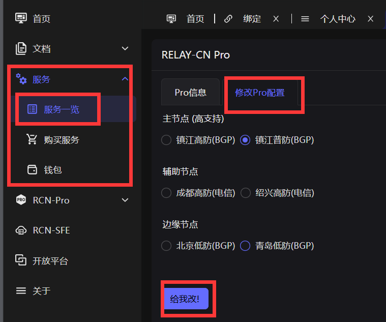
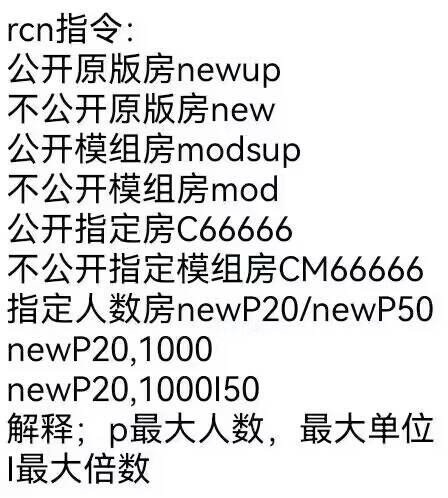
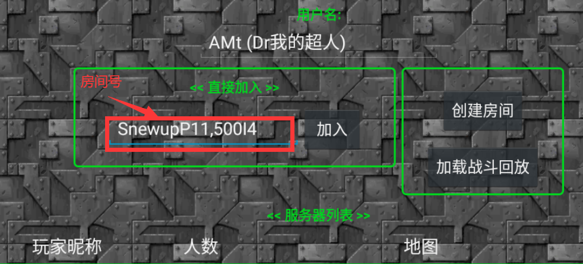
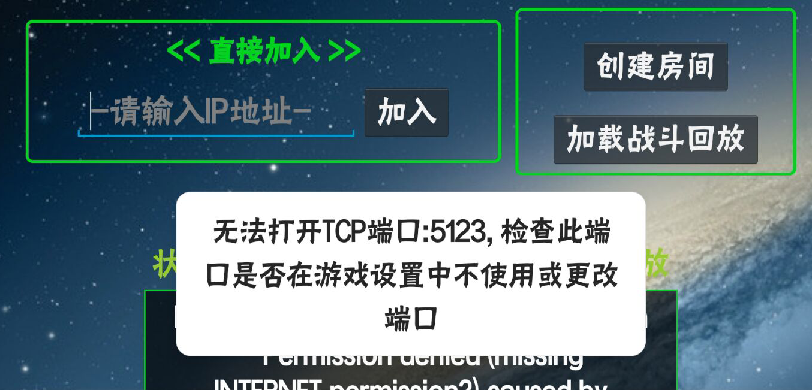
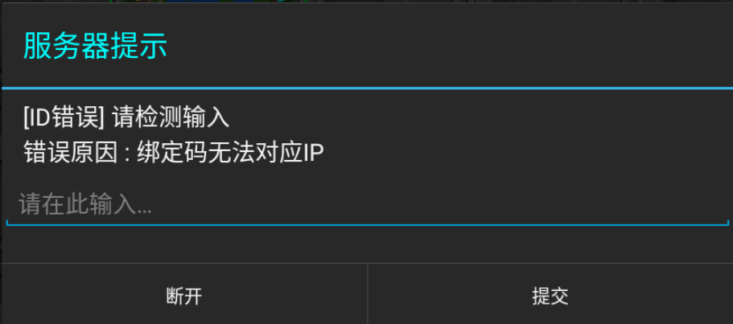
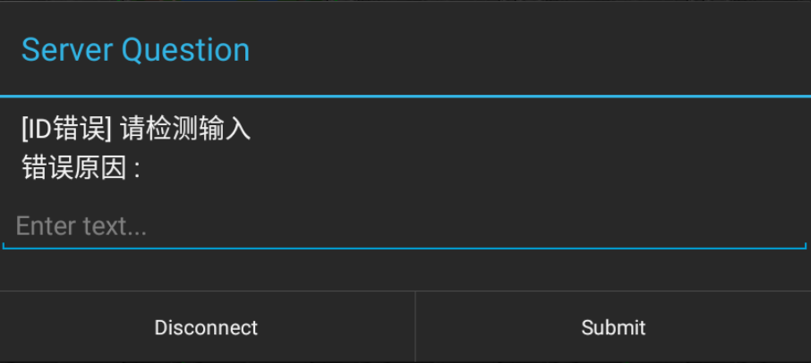

1.问：我购买了Pro并绑定了QQ号为什么开房间还是显示无权使用？
答：请首先确定您的Pro账号已绑定QQ，并试着在当前游戏设备上重新登录Pro网站或更换网络
2.问：我在使用Pro开房时出现了一直转圈，进房间没反应的情况
答：可能是当前使用的服务器出现了问题，请根据下图更改节点

3.问：除了Snewup还有其他开房方法吗？
答：若需要自定义开房请在房间号输入“S/R + 下图指令”


4.问：我开房间出现了如下报错

答：请在游戏设置中查看是否开启UDP
5.问：我在使用慢速绑定时出现了“绑定码无法对应IP”的错误

答：这是为了防止慢绑码被滥用添加的保护，请你在当前游戏设备上登录Pro网站后再进行慢速绑定
6.问：我在使用慢速绑定时出现了如下错误

答：请检查您的游戏是否为其他改版，已知可用慢绑的改版:指令版（最新版）、RWPP、全汉化版等
7.待补充